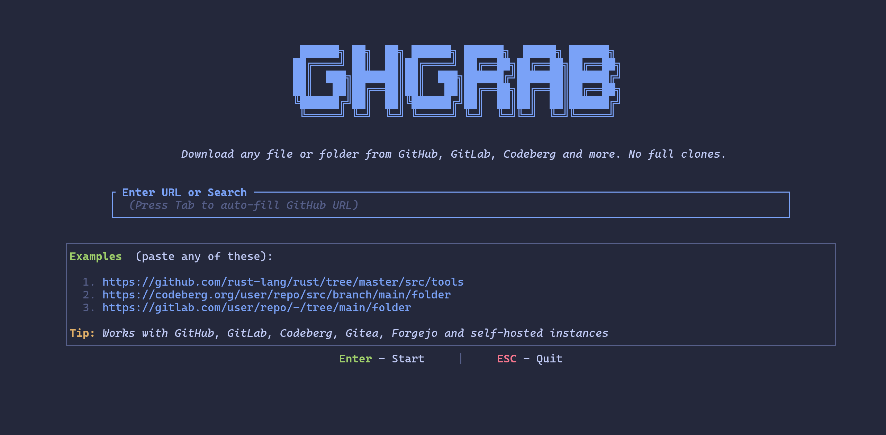

Creating, cloning, and updating repositories
Empirical Social Choice
October 28, 2026
Set the name and email that will appear on your commits:
Set a new local name and email for, e.g., GitLab:
Note
These settings identify your commits. They do not sign you in to GitHub or GitLab.
intro-to-git.An example GitHub URL looks like this:
GitLab works the same way, but uses the URL of your GitLab server.
Open a terminal and go to the directory where you want to keep your projects:
Clone the repo (replace the example URL with your own):
git clone creates a folder with the project files and Git history. It also connects the local repository to the remote, usually named origin.
Open README.md in a text editor and add a sentence. Save the file, then run:
git status shows which files have changed.git add selects changes for the next commit (staging).git commit records the changes in your local repository.git push uploads your local commits to GitHub or GitLab.Refresh the repository page in your browser to see the updated README.
To bring in changes that are on the server but not yet on your computer:
If you already have a project on your computer, first create an empty repository on GitHub or GitLab (do not initialize it with a README). Then open a terminal inside your existing project folder:
Replace the URL with the URL of your empty remote repository. The -u option sets up tracking, so later you can simply type git push.
Warning
Do not commit passwords, access tokens, or other sensitive information. Use a .gitignore file to exclude temporary, generated, or sensitive local files before staging them.
| Command | Purpose |
|---|---|
git clone URL |
Copy a remote repository to your computer |
git status |
Check file changes |
git add FILE |
Stage a specific file |
git add . |
Stage changes in the current directory and below |
git commit -m "message" |
Save a local snapshot |
git push |
Upload commits to the remote |
git pull |
Download and integrate remote changes |
git log --oneline |
Show recent commits |
README.md and save it.git status, git add README.md, git commit -m "My first change", and git push.Tip
You can usually clone a public repository without signing in. Pushing changes—or cloning a private repository—requires authentication. Depending on the setup, this may use a browser sign-in, a credential manager, an SSH key, or an access token. Do not paste your account password into Git.
First Steps:
Close and reopen the terminal:
